7 of 7 pages in Core were looked at, each at 1280 and 390 (screenshots at commit eef7d37, navigated via the menu), against the wireframe where one exists (6 pages) and unaided for Home_Web. Result: 0 P1, 6 P2, 11 P3. Every page can be used to complete its task at 1280. At 390 the Tax and Sequence pages are hard to read (P2). I would show the 1280 pages to a customer; I would not show Tax_Overview or Sequence_Overview on a phone. Verified facts: at 390 the side rail is hidden and the menu is a menu bar in the top bar; the Feedback button sits at the right edge and covers content at 390; Sequence_Overview is an inline-editable list.
Not measured:tests/e2e/design-audit.js (class, a11y, overflow sweep) was not run in this pass, so those four dimensions are UNMEASURED here; empty-state and empty-required-field validation were not exercised; only the first-row popup state was captured.
Per-page verdicts
Core.Home_Web (Judged, unaided (no wireframe)): 4c: purpose clear in 5s (a welcome screen). Hierarchy fine: crumb, H1 'Welcome', intro. One H1. 4d: header block present and spaced (24px below H1 block); alignment and rhythm fine at 1280. At 390 the Feedback button covers intro text (P2). The page uses 15% of the viewport height; nothing is primary (no action) - the menu is the action. Rail shows only Home and Contacts for this role, as expected for the role.
Core.Company_Edit (vs wireframe): 4c: logical; one Save. Two-column Identity/Address and Sales/Purchase then Invoicing as drawn. Every wireframe field (b2-b19) is present and populated, except Invoice terms and Street2, which are empty in the data. Divergence: H1 shows the company name 'erpv1 Demo B.V.' with crumb 'Company'; the wireframe has 'Company' twice. Reads as a deliberate improvement, to be confirmed. 'Users' link: P2. Label wrapping: P3. 390: single column, usable; Save sits right of the H1 and is fine.
Core.Sequence_Overview (vs wireframe): 4c: an inline-editable list (confirmed: all cells are text boxes, 'Remove' per row). Purpose clear. There is no 'New' action (the wireframe has none either), so a new sequence cannot be added from this page. Divergences: 9 rows against the wireframe's 2 (data); no pager shown for 9 rows (the wireframe shows '1-2 of 2'); a white card instead of a bordered table. Findings: code truncation (P2), unlabelled 390 inputs (P2), Remove without confirmation (P2). No crumb, as drawn.
Core.Tax_Overview (vs wireframe): 4c: logical; one primary action 'New' and the row opens Tax_NewEdit (verified by capture of Tax_NewEdit). Fields b1-b6 all present and populated; Amount right-aligned (num-right). Divergence: Computation reads 'Percentage of price' vs wireframe 'Percentage'; Amount '21' vs '21.00'. Pager '1 to 15 of 15' shown. 1280 is fine apart from the clipped filters (P3) and fixture rows (P3). 390: columns collapse (P2). Empty state not exercised (15 rows).
Core.Tax_NewEdit (vs wireframe): 4c: popup opened from the first row, with Save/Cancel; all fields b1-b7 present and populated, Included in price unticked. 4d: dialog proportions fine, spacing even (about 42px between fields), 390 dialog fills the viewport and is usable, the dialog header overlaps the top bar menu under the dim layer. See P3 on the overlay.
Core.PaymentTerm_Overview (vs wireframe): 4c: logical; 'New' primary, row click opens the editor. Name and Note columns both present (Note blank). The page is empty below 3 rows, which is correct. 390 shows both filter inputs above the Name list, which fits; no truncation. No findings above P3.
Core.PaymentTerm_NewEdit (vs wireframe): 4c: logical; Term section plus Instalments inline list with '+ Add a line' and Remove, as drawn. All b2-b8 present and populated (Percent / 100.00 / 15 / Days after invoice date). Eyebrow 'Payment term' and H1 '15 Days' as drawn. Findings: header offset (P3), label column width (P3), Delay type truncated at 390 (P3), Feedback button nearly touching Save at 390 (P2, systemic). The layout of this page is the same as Company_Edit.
P1
None found. No page was observed where a user cannot complete a task, no blank required field, no empty grid without a message, no button pointing at a wrong page (the first-row popups open the right page).
P2
[P2] Core.Sequence_Overview @390 — element hdCode…hdNextNumber (gridLinesHead, class th lines-head hide-phone); txtCode/txtPrefix/txtPadding/txtNextNumber (Judged). Wrong: The header row is hidden on phone and the row inputs carry no captions, so each row is four bare inputs (BILL/%(year)s/, 5, 1) stacked with no label saying which is Prefix, Padding or Next number. Root cause: Column captions live only in the hide-phone header layoutgrid, not on the inputs (MDL 306 lines 18-33). Inline-edit list imitates a grid, so no per-field label fallback exists.
[P2] Core.Tax_Overview @390 — element gridMain (datagrid, density-compact) (Judged). Wrong: All six columns are kept at 390px and each is squeezed to about 30px: names show as '2…', 'J…', scope as 'S…', computation as 'P…'. The user cannot tell which tax a row is; header labels are gone and only sort arrows and clipped 'Select' filters remain. Opening a row still works. Root cause: No column hiding or priority for phone on the Data grid 2 columns, so the browser truncates every column equally. The wireframe is desktop-only; no phone treatment was specified or built.
[P2] Core.Sequence_Overview @1280 — element txtCode (layoutgrid column DesktopWidth: 2) (Judged). Wrong: The Code cell is about 140px wide and clips the key: 'account.move.in_invo', 'account.move.in_refur', 'account.move.out_inv', 'account.move.out_ref'. The four account.move.* sequences are indistinguishable by eye, and Code is an editable box, so a user can rename a key by accident. Root cause: Width 2 of 12 chosen for a short key like 'sale.order' (as in the wireframe, 2 rows); the seeded data has longer keys. Code is not read-only.
[P2] Core.Home_Web @390 (systemic: every page at 390) — element Feedback module floating button (right edge, about y=172-208) (Judged). Wrong: The button sits on top of content: it hides words of the Home intro ('Use', 'start'), touches the Save button on PaymentTerm_NewEdit (about 3px apart), and abuts the grid column-chooser on the Tax and PaymentTerm overviews. At 1280 it sits in the gutter and is harmless. Root cause: Fixed-position Feedback widget with no reserved gutter; the phone content padding is 16px (main.scss, .region-content .spacing-inner-layout), less than the button width.
[P2] Core.Company_Edit — element lnk0 (linkbutton 'Users' -> Administration.Account_Overview) (Judged). Wrong: The bottom of the form ends in a bare blue word 'Users' with no heading, section or explanation. It reads as a stray label rather than a navigation action. Whether the Administrator can also reach user administration from the menu is not shown by the page. Root cause: MDL 305 line 107 places a link button with no surrounding section. The wireframe states the intent only in a contract note, not as a drawn control.
[P2] Core.Sequence_Overview — element btnLineDelete (linkbutton 'Remove', Action: delete) (Judged). Wrong: 'Remove' on every row deletes a document-numbering sequence in one click. The MDL sets no confirmation. Not verified at runtime, so the prompt may come from the default. A deleted sequence will stop number generation for that document type. Root cause: Action: delete used with no confirmation setting and no guard for in-use sequences. A destructive action rendered like any other link.
P3
[P3] Core.Home_Web — element txtIntro / whole page (Judged). Wrong: The landing page is a heading plus one sentence over about 700px of empty canvas. It does not give a first-time user anything to click except the menu, and the sentence says the user's real start page 'opens after sign-in'. Unaided row 7: I would not show it to a customer as a home page, but it is a neutral fallback, so P3. Root cause: Deliberate fallback (MDL 311 header comment): each role has its own home page.
[P3] Core.Home_Web @1280 — element Sign out (top bar) (Judged). Wrong: A focus ring is painted on 'Sign out' on landing. It does not appear on the other pages' captures. Root cause: Autofocus on the first focusable element on this page only (see learned-css-that-never-applied.md, focus ring on landing). Cause not confirmed from this evidence.
[P3] Core.* @390 (all 6 pages with menu) — element phone-menu (menu bar in top bar) (Judged). Wrong: Confirmed: the side rail is hidden and the menu is a menu bar. The items stack vertically in the top bar (Home / Contacts / Configuration), which grows from 69px to 103px, and 'Home' shows a highlighted box clipped at the top edge on pages that are not Home (Company, Sequence, Taxes). Sub-items (Taxes, Payment terms) are behind a dropdown, so they are reachable, but the active state is wrong. Root cause: .phone-menu in main.scss reuses the responsive menu without the active-item styling that the rail has; the top bar height is not fixed for stacked items.
[P3] Core.PaymentTerm_Overview — element gridMain, Note column (Judged). Wrong: The Note column is blank for all 3 rows, so half the grid width carries nothing. The wireframe's rows have notes ('Payment within 30 days'). This is data, not a bug (the same term has an empty Note on PaymentTerm_NewEdit), but the grid shows no sign of it. Root cause: Seed data (302) sets no notes. The grid has no empty-cell treatment.
[P3] Core.Tax_Overview @1280 — element fName..fActive filters (header row) (Judged). Wrong: The filter row is clipped: the 'Select' placeholders in the Scope, Computation, Included and Active drop-downs are cut off at the bottom, and the Name text-filter's 'Ab' button box is taller than its input. Root cause: Filter widgets sit in a theme-pinned header row height (learned-detection-gaps.md: theme-pinned row heights).
[P3] Core.Tax_Overview — element gridMain rows (Judged). Wrong: 13 of 15 rows are identical 'Journey tax 5%' fixtures left by the e2e journey, against the wireframe's 2 taxes. They hide the real taxes' position and fill the page. Not a model defect; the review environment is not clean. Root cause: Journey cleanup/teardown not removing created taxes.
[P3] Core.Company_Edit / PaymentTerm_NewEdit / Tax_NewEdit — element label columns, required markers (Judged). Wrong: (a) Label column width differs: Company about 117px (labels wrap: 'Quotation validity days', 'PO approval threshold', 'Default purchase tax' take two lines) vs PaymentTerm about 240px. (b) The wireframe marks required fields (Name, Currency, Scope...); none show a marker in the app, so required fields are only learned on a failed save. Validation-on-empty was not exercised in this look. Root cause: Per-page column widths in the layoutgrids; no required indicator class applied.
[P3] Core.PaymentTerm_NewEdit / Sequence_Overview — element lines header vs inputs (Judged). Wrong: Header text is offset from its inputs: 'Value amount' at x=441 vs input at 452, 'Value' at 280 vs input at 296; on Sequence the headers start about 8px right of the inputs. At 390, 'Delay type' shows 'Days …' truncated. Root cause: .lines-head padding (16px) does not match the list-view item's inner padding for every column.
[P3] Core.Tax_NewEdit — element dialog (popup) (Judged). Wrong: The popup renders correctly: title 'Tax', fields in the wireframe's order, primary Save and secondary Cancel, 1280 and 390 both usable. Differences from the wireframe: no repeated h2 'Tax' section; Name is auto-selected on open. The dimming overlay ends at y=900 in both captures; I read this as a full-page capture artefact (viewport 900px tall) and did not verify it live. Root cause: Capture method (full-page screenshot over a fixed-position backdrop); not asserted as a defect.
Reuse gaps
The page-head block (ctnPageHead / ctnPageHeadTitle / ctnPageHeadActions with page-head classes) is hand-copied into each of the 7 pages rather than built once as a snippet. It is consistent today, but any change touches 7 scripts. (P3, Judged)
The theme's pill pill-ok|warn recipe classes exist in the built stylesheet but Tax_Overview shows Scope, Included in price and Active as plain text ('Yes'/'No'). Possible reuse of the existing status component. The wireframe also shows plain text, so this is a suggestion rather than a divergence. (P3, Judged)
Sequence_Overview and the PaymentTerm instalments editor each reimplement a grid as a layoutgrid header plus a list view of inputs with a hide-phone header. The wireframe asked for an inline-editable Data grid 2. Both lose the header at 390 (see P2 #1) because the pattern is not a real grid. Built twice with the same flaw; a shared snippet would fix both. (P2 as a cause of finding #1; Judged)
What the harness cannot see
Stage 3 proves only that the 13 journey assertions and 4 positive controls ran on the flows the journey walks; absent is not green, and 3 rungs (two traces with no OTel, and data-target) are unproven. The harness cannot see any page off the literal click path: a journey that clicks a row never inspects the pages it does not open. It cannot see visual and styling regressions even on a covered page, because text-presence and DB-state assertions pass equally on a styled and an unstyled render. It cannot see cell-level rendering such as truncated codes and one-character grid cells, the 390px layout, or the Feedback overlay on content. This look is a still capture per page: hover, focus, validation messages, empty states and the live overlay were not seen.
Screenshots
Core.Home_Web
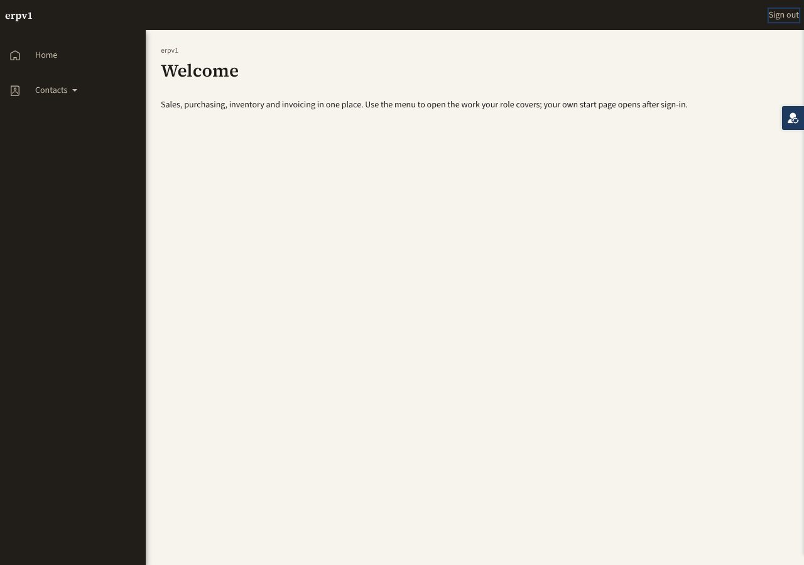
Core.Home_Web @ 1280
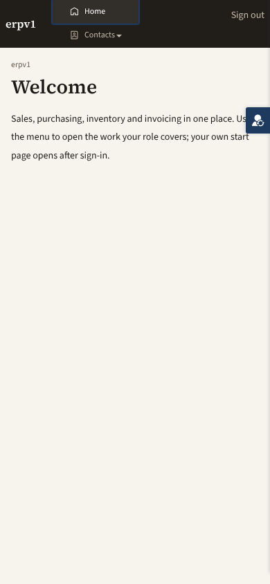
Core.Home_Web @ 390
Core.Company_Edit
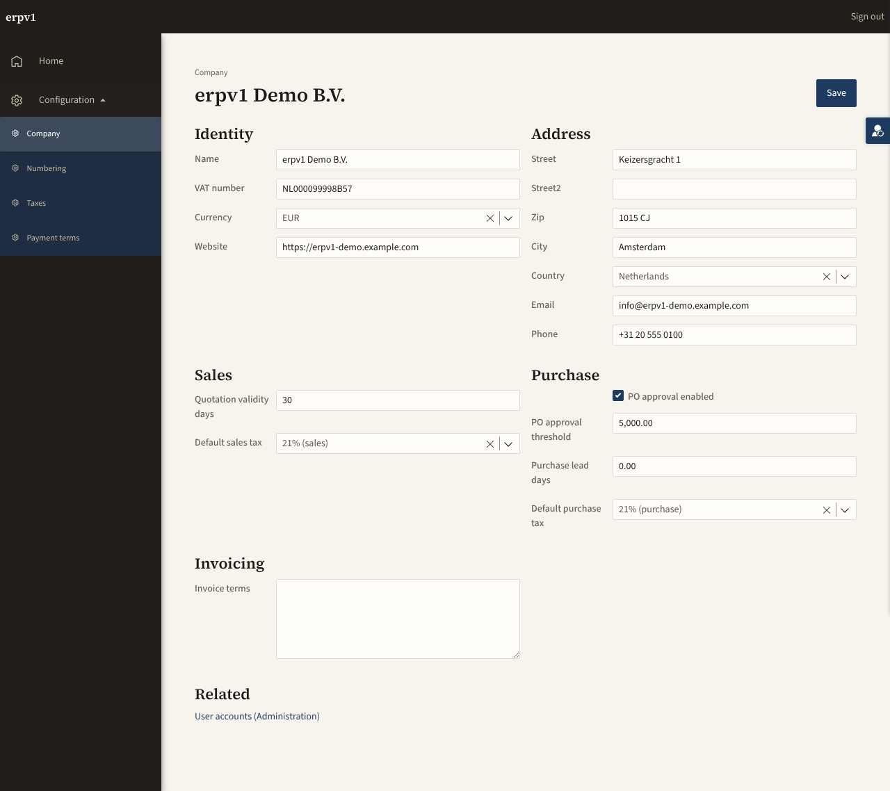
Core.Company_Edit @ 1280
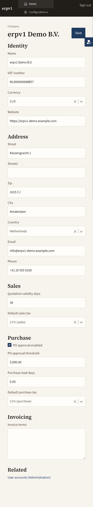
Core.Company_Edit @ 390
Core.Sequence_Overview
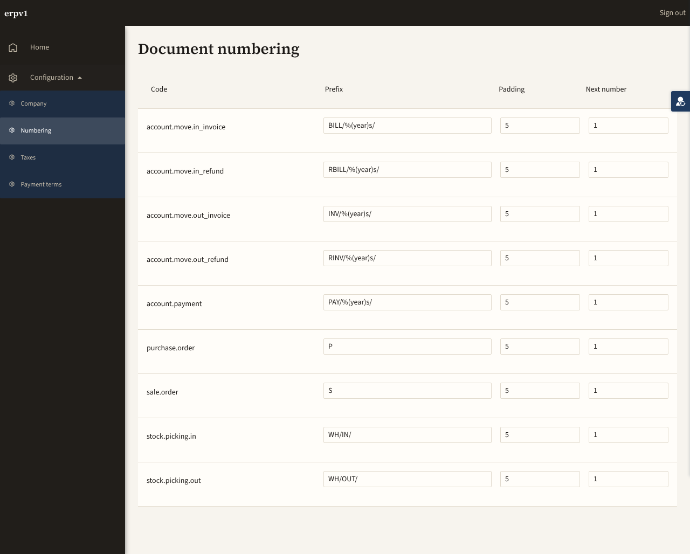
Core.Sequence_Overview @ 1280
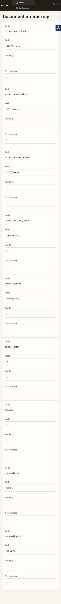
Core.Sequence_Overview @ 390
Core.Tax_Overview
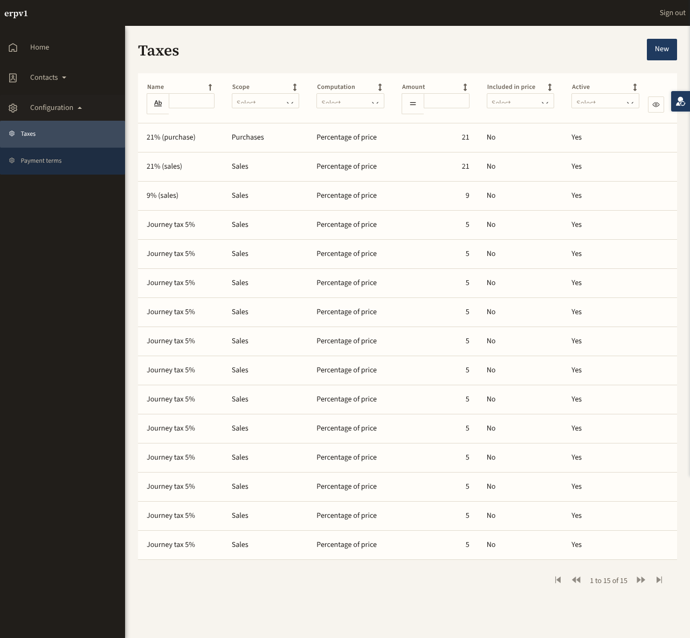
Core.Tax_Overview @ 1280
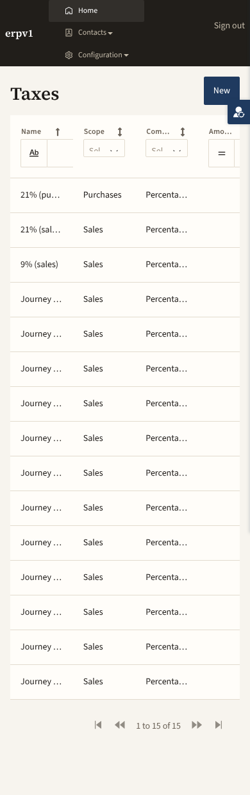
Core.Tax_Overview @ 390
Core.Tax_NewEdit
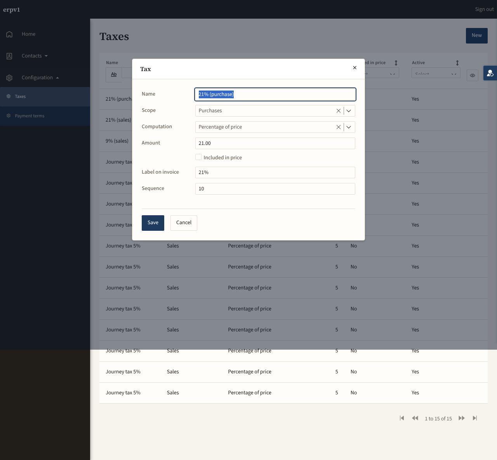
Core.Tax_NewEdit @ 1280
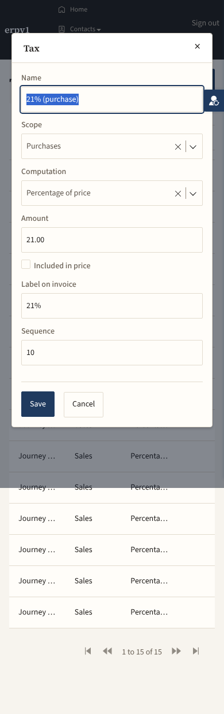
Core.Tax_NewEdit @ 390
Core.PaymentTerm_Overview
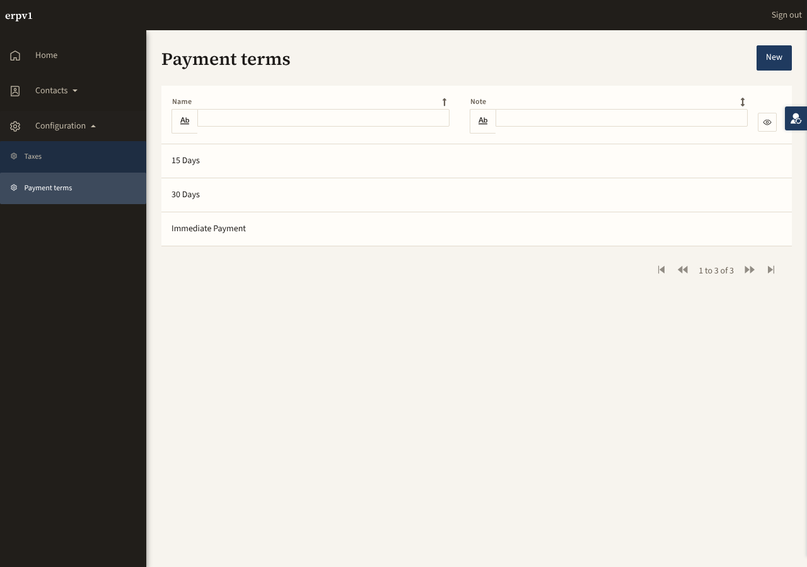
Core.PaymentTerm_Overview @ 1280
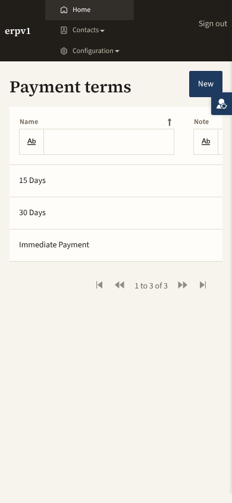
Core.PaymentTerm_Overview @ 390
Core.PaymentTerm_NewEdit
Core.PaymentTerm_NewEdit @ 1280
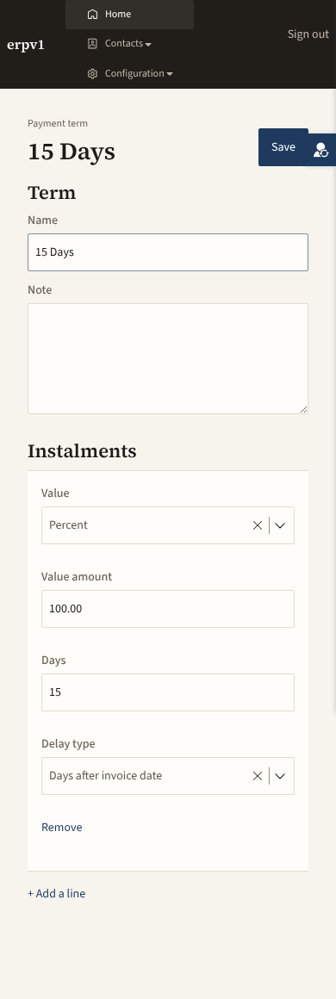
Core.PaymentTerm_NewEdit @ 390
Addendum 1 — re-look after the P2 fixes
Core · 7 of 7 pages re-shot at 1280 and 390 · stage 3: 1 of 1 journeys (unchanged since the first look)
Each earlier finding, as seen in the new shots (Judged, pixels):
P2-1 line editors at 390: fixed, still fixed — every Sequence input and PaymentTerm instalment input carries its label (Core.Sequence_Overview-390, Core.PaymentTerm_NewEdit-390).
P2-2 Tax grid at 390: fixed, still fixed — columns keep readable widths and the grid scrolls sideways; names still read ‘Journey …’ (P3 open) (Core.Tax_Overview-390).
P2-3 Sequence code clipping: fixed — full keys such as account.move.in_invoice are visible and read-only (Core.Sequence_Overview-1280).
P2-4 demo-user switcher / floating button at 390: still open, now worse — on Tax_Overview and PaymentTerm_Overview at 390 the switcher (right edge, y about 160-192) sits on top of the primary action: the New button reads ‘Nev’ (Core.Tax_Overview-390, Core.PaymentTerm_Overview-390). On Company_Edit and PaymentTerm_NewEdit it touches Save (Core.Company_Edit-390, Core.PaymentTerm_NewEdit-390). At 1280 it sits in the gutter and is harmless. Now P2 (new evidence): the same overlap hits the primary action on every overview page of Core and Products at 390. Likely cause, not verified: the stacked phone menu grew to 4 rows (top bar about 138px) so the page-head row, and New, lands at the switcher’s fixed y.
P2-5 Users link: fixed — under a ‘Related’ heading, ‘User accounts (Administration)’ (Core.Company_Edit-1280). Related known open P2: UserProfile_Edit still has no menu entry (Partners).
P2-6 one-click Remove on sequences: fixed — no Remove on the Sequence rows (Core.Sequence_Overview-1280). Remove on the PaymentTerm instalment line still has no confirmation (P3, new; Core.PaymentTerm_NewEdit-1280).
P3 Home focus ring on Sign out: still open (Core.Home_Web-1280, ring around ‘Sign out’). Home page sparseness: unchanged. At 390 ‘Home’ shows a focus box.
P3 phone menu: still open — ‘Home’ is highlighted on every non-Home page at 390 and the top bar is 103px (3 items) to 138px (4 items, with Configuration).
P3 Tax filters clipped: still open (Select placeholders cut, Core.Tax_Overview-1280). PaymentTerm Note column blank: still open (data).
P3 Tax fixtures: still open and growing — 14 ‘Journey tax 5%’ rows of 17 (was 13 of 15) (Core.Tax_Overview-1280).
P3 label column widths and required markers: still open (‘Quotation validity days’, ‘PO approval threshold’ wrap; no required markers) (Core.Company_Edit-1280).
P3 lines header offset: still open, smaller — PaymentTerm instalment headers start 8 to 16px left of their inputs; ‘Delay type’ is now truncated at 1280 (‘Day…’) instead of 390 (full text at 390) (Core.PaymentTerm_NewEdit-1280/-390).
P3 Tax_NewEdit popup: unchanged — dialog fine, dialog header overlaps the top bar at 390, dim layer ends at y=900 in the 1280 full-page capture (artefact).
New P3: Sequence_Overview shows 9 rows with no pager and no way to add a sequence (unchanged from first look, restated); Company_Edit now has the Configuration menu group (Company, Numbering, Taxes, Payment terms, Units of measure, Product categories) with all entries reachable (Core.Company_Edit-1280).
New P1: none. Not measured: design-audit.js not run; empty states and validation not exercised.